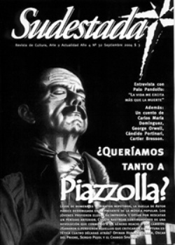

Buscar
Introducción al mundo de los sueños
Edición N° 32
Septiembre 2004
Revista bimensual
Comprar edición impresaSumario
- Astor Piazzolla: La soledad de un provocador apasionado
- Próxima estación: desesperanza
- Introducción al mundo de los sueños
- George Orwell, la sospecha de la libertad
- Palo Pandolfo: "Es un milagro que todavía esté haciendo música porque soy muy antisistema"
- Cándido Portinari
Compartir Articulo
Lo conocí hace años, en una oficina pública de Buenos Aires. Yo era muy joven, atendía la fotocopiadora y detestaba los ventanucos de las oficinas, la luz de tubo de las oficinas, y a la porción de la humanidad con la que viviría, por el resto de mi vida, atrapado en los intestinos de una bestia colosal.
Él ya era veterano, discretamente pelado, discretamente pálido, adusto. Demasiado adusto. Charly García y Nito Mestre cantaban a coro "Y dónde estás ahora, Natalio Ruiz, el hombrecito del sombrero gris...", y a mí me daban ganas de gritar: ¡Está en mi oficina! ¡Lo conozco! ¡Vive en mi oficina!
Valentini era un hombre gris. Quiero decir, de saco y pantalón gris, y creo que tenía gris hasta la corbata. Me impresionaba. Por su manera de llegar, antes que nadie, y por su manera de irse, siempre último, con esa resignación en la camisa y la pulcritud de sus zapatos.
Tenía un cargo de secretario gerencial o algo por el estilo, y trabajaba con otros esclavos en una dependencia del mismo piso, a la que yo debía ir a menudo.
Valentini reunía el colmo de mis terrores en su blanca piel de oficinista. Si llamaba el jefe, ahí estaba Valentini. Si venía una orden urgente de arriba, ahí estaba Valentini. Más que el empleado, era la ocasión. Mejor que la disponibilidad, era la actitud servil y humillada.
Una vez lo vi gatear, de rodillas, alrededor de su escritorio. No lo pude creer. Regresé por el pasillo a la cueva de mi fotocopiadora, con esa sensación de irrealidad propia de los sueños. Había colocado sobre el piso varios expedientes, porque ya no cabían en su escritorio, y controlaba las fojas y saltaba de uno a otro, igual a un perro que no decidiera qué hueso roer.
Decididamente, podía ignorar lo que haría con mi vida, pero nunca me convertiría en un hombre como Valentini. Yo iba a trabajar de vaqueros, sin saco, y con mi compañero de calvario, un pibe que usaba lentes a lo John Lennon y tenía el pelo aún más largo, nos prometíamos que jamás nos pondríamos una corbata alrededor del cuello, así tuviésemos que entregar la vida. Las corbatas representaban la horca que la sociedad ponía alrededor de cada individuo para extraerle el aire, el jugo, la módica felicidad con la que se podía soñar en un mundo fatalmente envilecido por el dinero, la falsedad y la estupidez de una burocracia que comenzaba en la escuela primaria y terminaba en la solemnidad del entierro. Dos metros bajo el suelo o en cualquier oficina como la nuestra, llena de tipos grises y muertos como Valentini, capaces de lamer expedientes hasta que se les seque la lengua, y la mano de sus verdugos.
(El texto completo puede encontrarlo en la edición gráfica de Sudestada N°32)
Comentarios
Carlos María Domínguez
Articulos más vistos


LIBRERÍA SUDESTADA

Colección infantil

Distribuidora de Libros

Suscripción

Sudestada en URUGUAY

Otros articulos de esta edición
Astor Piazzolla: La soledad de un provocador apasionado
A más de una década de su muerte y lejos de homenajes y tributos repetidos, la huella de Astor Piazzolla ...
Cándido Portinari
En la Fundación Proa se exhibe un recorte de la obra del plástico brasileño Cándido Portinari. Desde la mirada de ...
Palo Pandolfo: "Es un milagro que todavía esté haciendo música porque soy muy antisistema"
George Orwell, la sospecha de la libertad
Pocas cosas son como se las ve a primera vista en la vida de Orwell, desde su participación en la ...